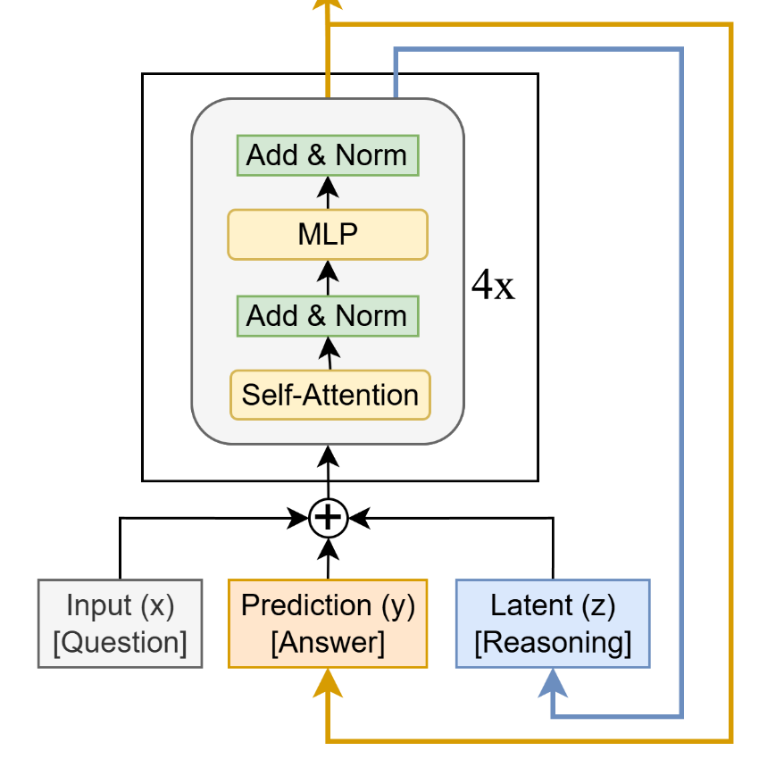
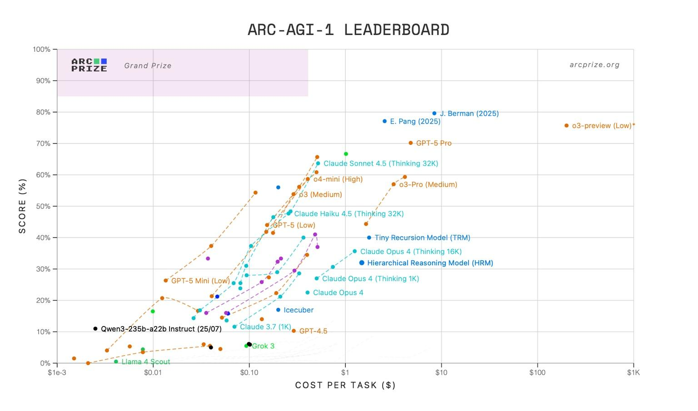
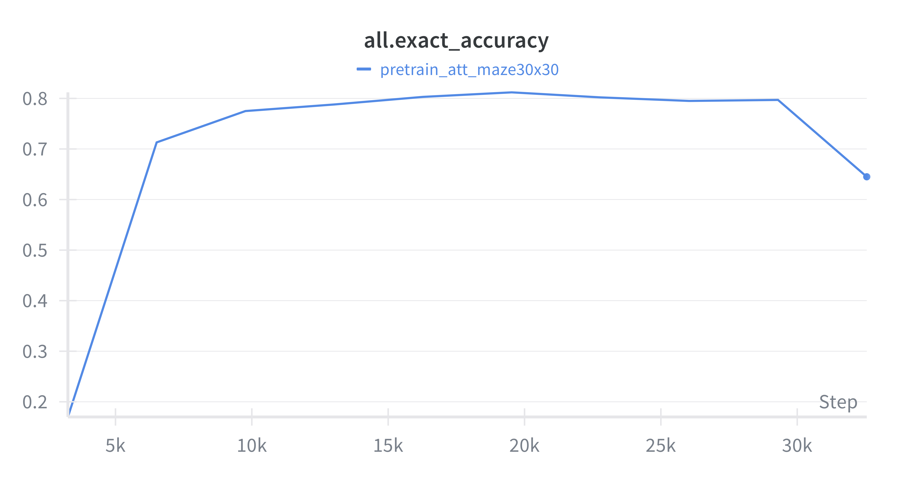
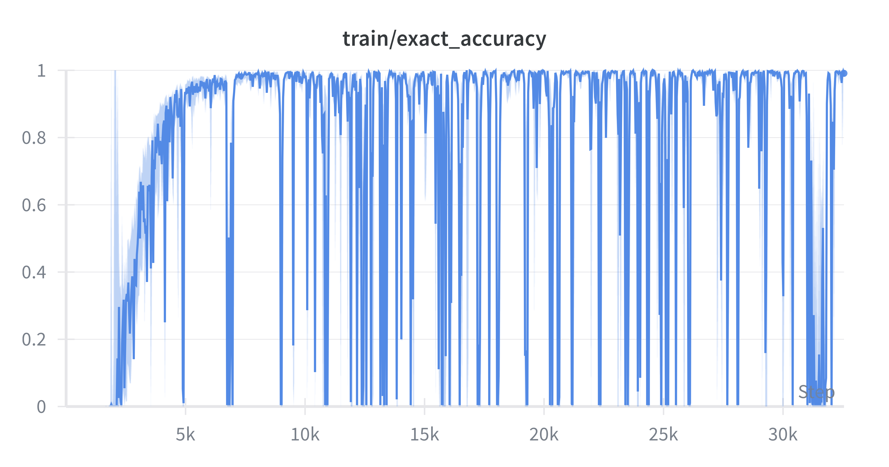
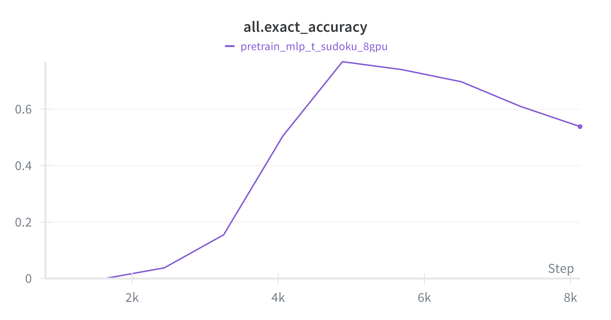
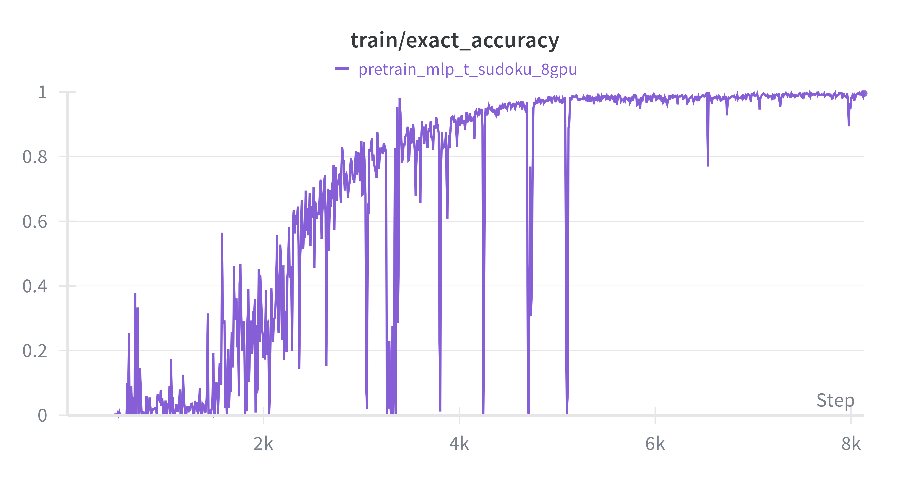
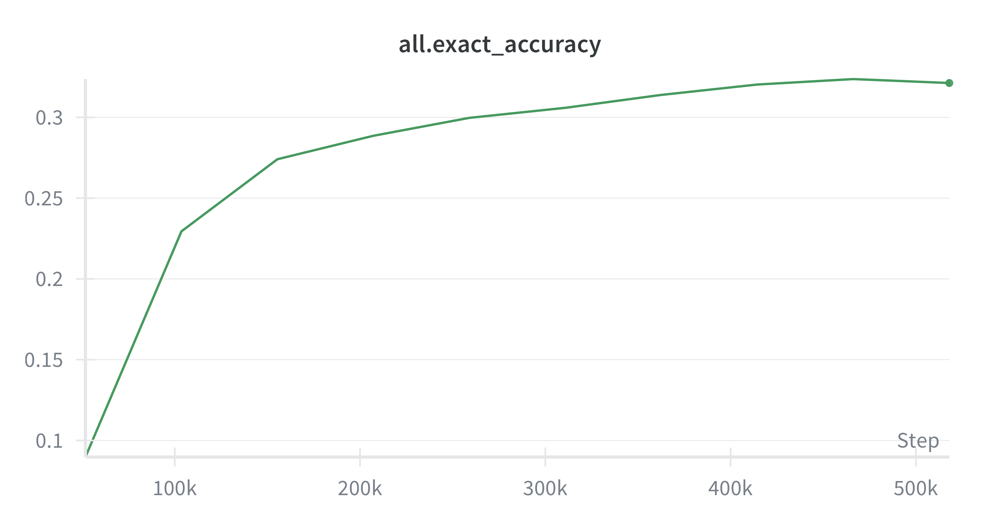
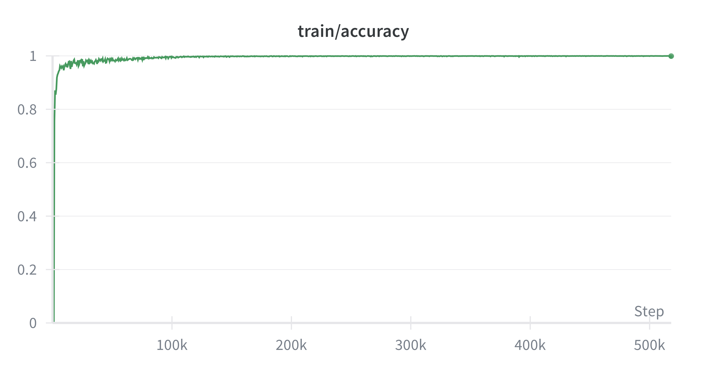
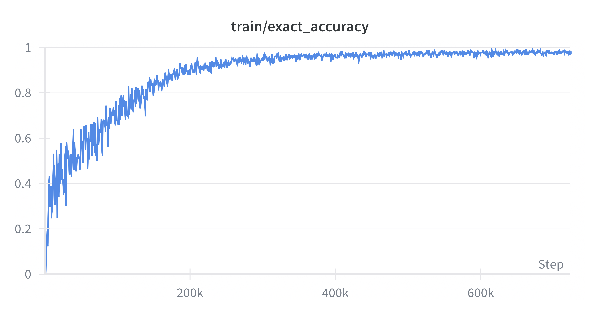
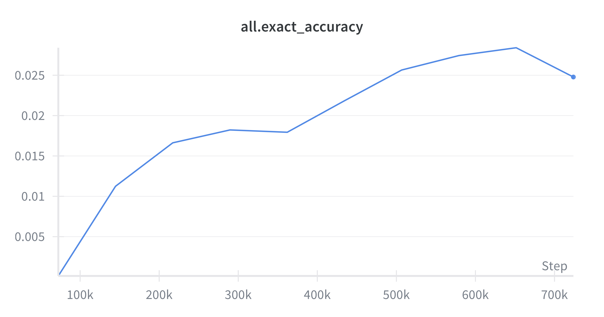

A compact recursive architecture can go surprisingly far when training dynamics are explicit. This note reconstructs the Tiny Recursive Model, compares it against HRM, and examines which pieces actually drive reasoning performance.
Since the introduction of the Hierarchical Reasoning Model (HRM), its compact architecture and surprisingly strong performance on challenging reasoning benchmarks such as ARC-AGI have attracted significant attention from both academia and industry. This work focuses on reproducing and analyzing the Tiny Recursive Model (TRM), which builds upon HRM while systematically removing components that are weakly justified theoretically, insufficiently explained, or empirically marginal. Through careful ablation and empirical investigation, the authors demonstrate that HRM’s performance does not primarily stem from fixed-point approximation or hierarchical recursion. Instead, its effectiveness arises from implicit multi-step information propagation during recursion. TRM formalizes and extends this insight by introducing explicit Deep Supervision: supervision is applied at every recursion step, rather than only at the final output. This design significantly improves training stability and generalization. Remarkably, even with substantially reduced model capacity, TRM achieves stronger generalization performance. Due to its simple and intuitive design—implemented entirely within a standard Transformer architecture—TRM is highly extensible and can be readily applied to larger language models and a broad range of reasoning tasks. This makes it a promising foundation for future research on recursive and iterative reasoning. Structural Comparison Between TRM and HRM TRM is derived from HRM through a systematic simplification and analysis of its core components. By progressively removing or replacing individual modules, the authors isolate which elements truly contribute to performance. The key differences are summarized below.
Structural Comparison Between TRM and HRM: Key Architectural Simplifications

fH fL 1. Dual-Module Recursive Structure ( and ) In HRM, the model employs two recursive modules operating at different frequencies. The high-frequency fL module is responsible for updating the local latent zL fH variable , while the low-frequency module zH updates the global latent variable . This design is intended to simulate reasoning processes occurring at multiple temporal scales. This design aims to mimic multi-timescale reasoning.
In contrast, TRM merges these two modules into a single recursive network, denoted as net(x, y, z), which itself consists of only two to four extremely standard Transformer layers. This unified network jointly processes the input, latent variables, and intermediate representations. The authors argue that although the dual-recursion structure in HRM is biologically motivated, it introduces additional architectural complexity and hyper-parameter tuning difficulty during training, while providing only limited performance gains. As a result, this design is not strictly necessary. Notably, in TRM’s implementation, the latent variables y and z are combined via additive fusion when used as inputs. When produced as outputs, however, the two variables share the same network architecture, and are interpreted as either y or z solely based on the stage of recursion. This design allows the model to reuse a single, unified Transformer block without introducing any additional architectural components. Consequently, TRM is able to implement the proposed recursive reasoning algorithm entirely within a generic Transformer architecture. In other words, TRM fully encapsulates the recursive mechanism within the standard Transformer operator paradigm, preserving implementation simplicity while maintaining strong extensibility and framework compatibility. 2. Fixed-Point Approximation vs. Deep Supervision fL/fH HRM assumes that after a sufficient number of recursive updates using , the latent (zL, zH) (z*L , z*H) variables converge to a fixed point : L z) z*L ≈fL(z+ L z+ z*H ≈fH(z+ Hx), H Based on this assumption, HRM applies the implicit function theorem together with a one- step gradient approximation: gradients are back propagated only through the final fL fH application of and the final application of , while all preceding recursive steps are excluded from back propagation in order to save memory. TRM argues that this “convergence to a fixed point” assumption is unnecessary. Instead, TRM defines a full recursion as a sequence consisting of n consecutive applications fL fH of followed by one application of : zL ←fL(zL + zH + x) ⋯zL ←fL(zL + zH + x) , zH ←fH(zL + zH) n times Crucially, back propagation is performed through the entire recursion sequence, rather than being restricted to the final step. The intuition is straightforward: by allowing the model to observe gradients from the entire multi-step inner loop, rather than relying on a one-step approximation, training becomes more robust and generalization improves.
Under the Deep Supervision training scheme, each recursion step is supervised independently. In other words, the model is explicitly trained to learn a function of the form: (zL, zH) →(z′ L, z′ H) = Refine(zL, zH) meaning that regardless of the initial state, each recursive update should move the output closer to the correct solution. As a consequence: • During early training, the model is repeatedly penalized, since every supervised step incurs a loss; • During later training, the model learns a self-correcting recursive refinement process; • As a result, the initial recursion steps that do not carry gradients in truncated back propagation schemes do not drift arbitrarily, but instead perform a sequence of stable and meaningful refinement operations. 3. Simplifying the Recursion Stopping Mechanism HRM employs an Adaptive Computation Time (ACT) mechanism implemented via a Q- learning–based halting head, which estimates the value of continuing versus stopping recursion. While conceptually flexible, this approach incurs substantial computational overhead and suffers from high variance and instability due to reinforcement learning dynamics. TRM adopts a fundamentally different strategy: it reframes adaptive recursion as a supervised classification problem. A simple binary classifier directly predicts whether the current output matches the target label and decides whether to halt recursion. This transformation converts a complex policy learning problem into a standard discriminative task, dramatically reducing training cost and improving stability. 4. Biological Analogies and Neural Rhythm Interpretations Parts of HRM’s design are motivated by neuroscientific analogies, such as hierarchical reasoning driven by high-frequency and low-frequency neural rhythms. However, TRM argues that such biological metaphors are difficult to validate empirically and bear no direct relationship to actual model performance. As a result, TRM completely removes this interpretative framework and instead focuses exclusively on verifiable computational mechanisms. Overall, the improvements introduced by TRM reveal that HRM’s performance primarily arises from the combination of recursive computation and deep supervision, rather than from complex fixed-point theory or biologically inspired components. Through systematic simplification, TRM achieves higher computational efficiency, stronger generalization performance, and clearer theoretical interpretability.
Comparison with RNNs
| Dimension | Classical RNN | TRM |
|---|---|---|
| Objective | Process temporal sequences (inputs change over time) | Process a static input (iteratively refine the solution) |
| Input | Input x_t may differ at each time step | Input x remains fixed at every step (the problem does not change) |
| State | Hidden state h_t stores past information | Latent state z_t represents the progress of reasoning |
| Output | Generate output y_t at each step | Generate an increasingly better solution y_t at each step |
| Training | BPTT (backpropagation through the entire time sequence) | Deep supervision + local backpropagation (not through all steps) |
| Gradients | Long-range backpropagation; prone to vanishing/exploding gradients | Gradients propagate only over a limited number of steps (or even a single step), leading to greater stability |
| Convergence | No explicit convergence constraint (memory-oriented) | Explicit objective: converge to a stable solution |
ht+1 = fθ(ht, xt) For a classical RNN: The primary goal is to remember the past and predict the future, allowing the hidden state to evolve continuously over time. (zt+1, yt+1) = fθ(x, zt, yt) For TRM / HRM: The input x is fixed, while the latent state z and output y are iteratively updated until convergence to a stable point. The objective is recursive reasoning, not temporal modeling. In summary: RNNs learn temporal evolution TRM learns step-by-step reasoning until a good solution is found

Comparison on the ARC-AGI Official Leaderboard
| Model | ARC-AGI-1 | ARC-AGI-2 | Cost/Task |
|---|---|---|---|
| TRM | 40.0 | 6.3 | $2.10 |
| HRM | 32.0 | 2.0 | $1.68 |
Data source: ARC-AGI Official Leaderboard (https://arcprize.org/leaderboard) The results show that, under identical evaluation conditions, TRM significantly outperforms HRM on both ARC-AGI subtasks. The performance gap is particularly pronounced on the more challenging ARC-AGI-2, where TRM achieves more than a threefold improvement over HRM. Notably, TRM attains these results using a small-scale network with approximately 7M parameters, yet still achieves strong absolute scores. This demonstrates the effectiveness of its recursive reasoning mechanism and highlights its ability to generalize across diverse reasoning tasks despite limited model capacity.
Reproduction Experiments and Result Analysis
This section presents our reproduction experiments and corresponding analysis for TRM. We conduct full reproductions on four representative tasks—Sudoku, Maze, ARC-AGI-1, and ARC- AGI-2—and compare our results with those reported in the original paper as well as with third- party results from the ARC-AGI Official Leaderboard. The comparative results are summarized below.
Maze (Hard)
| This reproduction | TRM (original paper) | HRM (original paper) |
|---|---|---|
| 81.2 | 85.3 | 74.5 |


With only a single reproduction run, we achieve performance that is nearly identical to the results reported in the original paper, indicating that the proposed algorithm is training- stable and highly reproducible. As shown in the training curves, the model’s accuracy on the training set rapidly increases to nearly 1.0, followed by noticeable high-frequency oscillations. This suggests that the model
has effectively memorized the training samples, while the optimization process itself remains somewhat unstable. In contrast, test accuracy rises quickly during the early training phase and reaches a plateau at approximately 0.8, but then exhibits a significant decline during later stages. This trend reflects a clear overfitting phenomenon: as training progresses, the model continues to improve its memorization of training data, while its generalization performance on unseen samples deteriorates. The primary contributing factors to this behavior may include: • the limited size of the training set, which is insufficient to support prolonged recursive optimization; • the relatively simple model architecture, which constrains both expressive capacity and generalization ability.
Sudoku-Extreme
In the Sudoku-Extreme task, the TRM paper evaluates two types of recursive architectures: an MLP-based recursion and an attention-based recursion.
MLP-Based Recursion
| This reproduction | TRM (original paper) | HRM (original paper) |
|---|---|---|
| 76.8 | 87.4 | 55.0 |


The results clearly reveal severe overfitting. On the test set, accuracy rapidly declines after reaching an early peak, indicating unstable generalization behavior. Compared with the results reported in the original paper, the performance achieved in this single reproduction run is noticeably lower. This suggests that the MLP-based results reported in the original work may rely on best-case outcomes across multiple runs, rather than representing a consistently reproducible performance level. Overall, the MLP-based recursive block exhibits poor generalization stability on the Sudoku task and is highly sensitive to training hyperparameters and initialization.
Attention-Based Recursion
| This reproduction | TRM (original paper) | HRM (original paper) |
|---|---|---|
| 75.0 | 74.7 | 55.0 |
Under the same training configuration, a single reproduction run achieves a test accuracy of 0.750, slightly exceeding the 0.747 reported in the original paper. The training and test curves indicate a significantly more stable convergence process: • Training accuracy steadily increases to approximately 0.8 and then remains stable, without large oscillations. • Test accuracy exhibits a smooth upward trend and stabilizes in the 0.74–0.75 range after convergence, without noticeable degradation. These observations demonstrate that the attention-based architecture provides superior stability and generalization in recursive reasoning, effectively mitigating the overfitting behavior observed in the MLP-based variant. Overall, these results indicate that attention-based TRM is both more efficient and more robust on Sudoku-Extreme, validating the effectiveness of combining recursive computation with attention mechanisms.
ARC-1
We reproduced the TRM model on the official ARC-AGI-1 benchmark and compared our results with those reported in the original paper as well as with scores from the official leaderboard.
| Model | TRM | HRM | |||
|---|---|---|---|---|---|
| this reproduction | original paper | leaderboard | original paper | leaderboard | |
| Accuracy | 32.4 | 44.6 | 40.0 | 40.3 | 32.0 |


During training, the model converges rapidly in the early stages, with training accuracy stably approaching 100%, indicating that the model is able to effectively learn the task distribution of the training samples. However, in terms of final performance, our reproduction result (32.4%) is lower than both the original paper’s reported score (44.6%) and the leaderboard result (40.0%). For comparison,
HRM achieves 40.3% in the original paper and 32.0% on the leaderboard. Although the reproduced TRM score is lower in absolute terms, the overall trend remains consistent with the original findings, and TRM still maintains a relative advantage over HRM. This performance gap suggests that TRM’s advantage stems from a robust structural improvement rather than from chance effects in a single experimental run. At the same time, it also indicates that TRM’s performance is sensitive to training configuration and data diversity. The training accuracy curve shows a rapid rise and early saturation, followed by a prolonged plateau in the 0.99–1.0 range. This “early saturation” behavior suggests that while the model can quickly fit the training data, it may suffer from insufficient data diversity or over- convergence. Given that ARC-AGI comprises a wide variety of reasoning sub-tasks, a single training configuration may not yield optimal generalization across all task types.
ARC-2
We further reproduced TRM on the official ARC-AGI-2 benchmark and compared its performance with HRM, the original paper, and results from the official leaderboard.
| Model | TRM | HRM | |||
|---|---|---|---|---|---|
| this reproduction | original paper | leaderboard | original paper | leaderboard | |
| Accuracy | 2.8 | 7.8 | 6.3 | 5.0 | 2.0 |


This task is substantially more challenging, with more complex examples that require stronger abstraction ability and multi-step reasoning. As shown in the training curves, the model converges rapidly in the early stages, with training accuracy gradually approaching 1.0. However, test accuracy remains consistently low, reaching a peak of only ≈2.5% at around 600k steps, followed by a slight decline. This behavior indicates severe overfitting: the model memorizes the training samples effectively but fails to generalize to unseen tasks. We attribute this phenomenon primarily to two factors: • the overly simplified model architecture, which lacks sufficient capacity to capture deeper task diversity; • the limited size of the training dataset, which is insufficient to support generalization of recursive reasoning in a high-dimensional task space.
Conclusion and Discussion
Through a systematic reproduction of TRM, we validate its core mechanisms and performance across multiple representative reasoning tasks, including Sudoku, Maze, ARC-AGI-1, and ARC- AGI-2. The results demonstrate that TRM achieves stable and efficient reasoning with an extremely small model size, and attains performance comparable to both the original paper and official leaderboard results on most tasks. These findings provide strong evidence for the reproducibility and structural robustness of the proposed approach. The defining characteristic of TRM lies in its structural simplicity and conceptual coherence, enabling recursive reasoning to be realized within a unified framework. By fully encapsulating recursive computation within a standard Transformer architecture, TRM eliminates the complex fixed-point approximations and hierarchical recursion designs used in HRM. Instead, stable convergence and multi-step reasoning are achieved solely through explicit recursion unrolling and deep supervision. Importantly, this design does not rely on any specialized operators or custom modules. With minimal architectural modification, recursive algorithms are naturally implemented within the standard Transformer framework. This algorithm–architecture unification endows TRM with both structural elegance and strong engineering scalability. It demonstrates that complex recursive reasoning does not necessarily require complex model structures; rather, appropriate training mechanisms—such as explicit recursion and multi-step supervision—are sufficient to induce hierarchical reasoning capabilities. Our reproduction experiments further confirm this claim, showing that TRM exhibits consistent training stability and performance across different tasks and configurations. More broadly, the design philosophy of TRM offers valuable insights for the construction of ultra-deep networks. It shows that recursive reasoning mechanisms can be realized entirely within a generic Transformer framework, without dependence on task-specific modules or additional architectural components. This highly unified approach opens up promising avenues for future research into stable optimization and self-correcting behavior in increasingly deep models. In essence, TRM demonstrates that complex behavior can emerge from simple structures, provided that the training dynamics are properly designed.